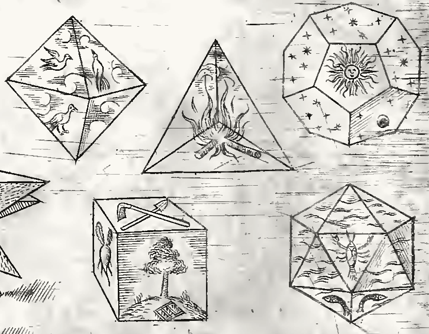

Proposition XXV: The Five Regular Platonic Solids¶
The most perfect and regular congruences of plane figures for forming a solid figure are five.
This is a scholium to the last proposition of the last book of Euclid ([XIII.18]). For by Proposition XV of this book, we begin with three angles at a vertex, and by Proposition XVI we stop at six triangular angles, four square angles, and three hexagonal angles, because by Proposition XVII those equal four right angles ($360^\circ$) and flatten into a plane rather than closing a solid angle.
Three equilateral triangles meeting at each vertex make less than four right angles ($3 \times 60^\circ = 180^\circ$); closing the gap with a fourth triangle yields the Tetrahedron (or Pyramid, $\{3, 3\}$).
Four equilateral triangles meeting at each vertex make $240^\circ$ ($< 360^\circ$); joining their sides forms a square-based pyramid matched oppositely by an identical pyramid, yielding the Octahedron ($\{3, 4\}$, Plates
Oo).Five equilateral triangles meeting at each vertex make $300^\circ$ ($< 360^\circ$); assembling pentagonal pyramids joined by a central zone of ten triangles yields the Icosahedron ($\{3, 5\}$, Plates
Pp).Three squares meeting at each vertex make $270^\circ$ ($< 360^\circ$), yielding the Cube (Hexahedron, $\{4, 3\}$, Plates
Qq).Three regular pentagons meeting at each vertex make $324^\circ$ ($< 360^\circ$), yielding the Dodecahedron ($\{5, 3\}$, Plates
Rr).

